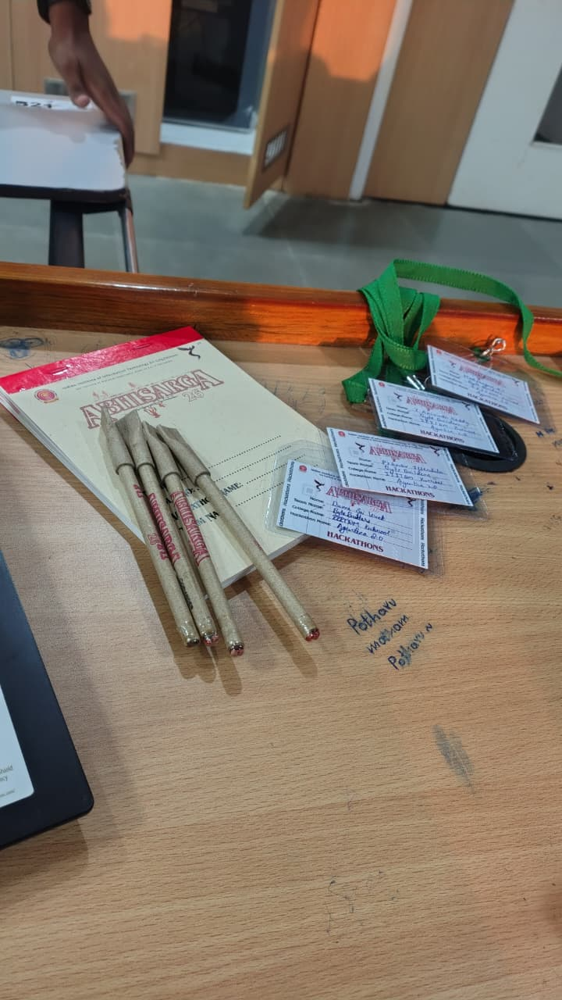

Speech processing and NLP
Lecture-Lens
Speech-to-text, topic summaries, formulas, and review questions in one processing pipeline.
Open to AI/ML internships
IIITDM Kurnool · B.Tech, AI & Data Science · 2028
Building AI people can use.
I build machine learning and generative AI applications, from data and model evaluation to the interfaces people use.
01 / Selected work
Three projects across multimodal AI, fraud detection, and adaptive learning.

01 Multimodal AI safety
A moderation workflow that flags toxic text and images and brings model predictions into a review dashboard.
6th of 240+ teams · Agentica 2.0
02 Machine learning and fraud detection
Transaction risk scoring with XGBoost, anomaly detection, and a dashboard for inspecting predictions.
Elevate Labs · Machine Learning Internship
03 Full-stack AI platform
An adaptive learning platform with generated roadmaps, assessments, and progress insights.
Independent project
Speech processing and NLP
Speech-to-text, topic summaries, formulas, and review questions in one processing pipeline.
Data analysis and NLP
Skill extraction from 100+ job listings, compared with university syllabi.
Conversational AI
A retrieval-based conversational assistant for menu and order queries.
Game development
A Unity runner with procedural obstacles, player physics, and a browser build.
03 / Technical toolkit
Core languages and tools, with implementation details in each project.
04 / A little background
An AI & Data Science undergraduate with an interest in building useful, complete systems.
I’m studying at Indian Institute of Information Technology, Design and Manufacturing, Kurnool, graduating in 2028. My work spans classification, generative AI, and the web applications that make models accessible.
Leadership · 2025–present
I manage budget planning, fund allocation, and expense accounting for the institute’s National Service Scheme unit, supporting campus and community programmes.
Community · 2025–present
I organise reading circles, literary reviews, and events for the institute’s reading club.
05 / Let’s connect
I’m looking for AI/ML internship opportunities and am open to research and project collaborations.